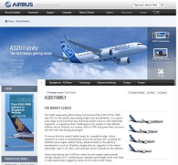

Site web d'Airbus (A320)
Pour plus d'informations sur la famille A320 d'Airbus, consultez le site officiel d'Airbus concernant la famille A320.
LES AVIONS
Pour plus d'informations sur la famille A320 d'Airbus, consultez le site officiel d'Airbus concernant la famille A320.
Retrouvez ici, toutes les dernières informations sur le crash de la GermanWings survenu le: .
Découvrez ou redecouvrez l'extraordinaire amerrissage d'un A320 US Airways sur le fleuve Hudson.
La famille d'avions monocouloir A320 (composée de l'A318, l'A319, l'A320 et l'A321) est la famille d'avions la plus vendue au monde. Ces avions sont utilisés pour des trajets très court-courriers jusqu'à des tarjets intercontinentaux.
Pour conserver son véritable avantage concurrentiel, Airbus continue d'investir dans des améliorations à travers la gamme de produits, notamment l'A320neo, avec des améliorations aérodynamiques de l'avion de ligne tels que "winglet", "Sharklets", la mise à niveau de la cabine passager (plus large), et les intervalles d'entretien prolongés pour la cellule.
Airbus a enregistré plus de 4.500 commandes fermes pour les nouveaux avions "neo" en , comprenant un nombre important de plus de 12.400 commandes globales enregistrées par Airbus pour l'ensemble de la famille A320.
| Modèle | A318 | A319 | A320 | A321 |
|---|---|---|---|---|
| Versions | 4 (111, 112, 121 et 122) | 8 (111 à 115, 131 à 133) | 9 (111, 211, 212, 214 à 216, 231 à 233) | 8 (111, 112, 131, 211 à 213, 231, 232) |
| Equipage Technique | 2 personnes | |||
| Passagers : deux classes / classe unique / maximum | 107 / 117 / 136 | 124 / 134 / 160 | 150 / 164 / 180 | 185 / 199 / 220 |
| Longueur | 31,45 m | 33,84 m | 37,57 m | 44,51 m |
| Envergure | 34,10 m | 34,10 m ou 35,80 m avec sharklets | ||
| Hauteur | 12,79 m | 11,76 m | ||
| Largeur cabine | 3,70 m | |||
| Largeur fuselage | 3,95 m | |||
| Masse à vide | 34 500 kg | 35 400 kg | 36 750 kg (-111), 37 230 kg | 47 500 kg |
| Masse maximale au décollage | 59 000 - 68 000 kg | 64 000 - 75 500 (ACJ:76 500) kg | 66 000 ou 68 000 kg (-111), 66 000 - 78 000 kg | 78 000 - 93 500 kg |
| Vitesse de croisière | Mach 0,78 = 828 km/h environ (variable selon température) | |||
| Vitesse maximale | Mach 0,82 = 870 km/h environ (variable selon température) | |||
| Distance de décollage | 1 355 m | 1 950 m | 2 090 m | 2 180 m |
| Autonomie | 5 950 km | 6 850 - 11 000 km | 6 150 km | 5 950 km |
| Capacité kérosène | 23 816 - 24 209 L | 23 816 - 40 948 L | 15 588 ou 24 093 L (-111), 23 816 - 30 193 L | 23 700 - 29 684 L |
| Altitude maximale de croisière | 39 800 ou 41 100 pieds | 39 100 - 41 100 pieds | 39 100 ou 39 800 pieds | 39 100 ou 39 800 pieds |
| A318 | A319 | A320 | A321 | Total | |
|---|---|---|---|---|---|
| Air France | 18 | 38 | 45 | 21 | 122 |
| British Airways | 2 | 44 | 66 | 18 | 130 |
| Lufthansa | - | 30 | 51 | 64 | 145 |
| American Airlines | - | 125 | 55 | 174 | 354 |
Pour plus d'informations sur la famille A320 d'Airbus, consultez le site wikipédia concernant la famille A320.
Retrouvez ici, toutes les informations concernant ce crash évité de peu, entre un Airbus A320 et un drone.
Retrouvez ici, la cause principale qui a causée le crash d'un A320 d'Air Asia le .